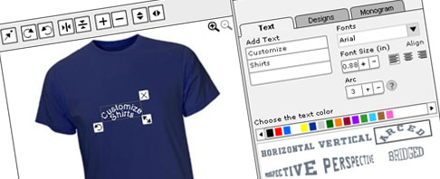

<h1>Navigation Control <sup id="ver" class="version"></sup></h1>
<div class="tabsPanel">
	<ul class="tabholder">
    	<li id="cms">CMS Systems</li>
        <li id="interactive">Interactive Presentations</li>
        <li id="ecommerce">Ecommerce Solutions</li>
        <li id="ajax">Ajax</li>
        <li id="web2">Web 2.0</li>
        <li id="flash">Flash Design</li>
    </ul>
</div>
<div class="tabsCntents">
	<div id="cms_content">
    		    	
    </div>
    <div id="interactive_content">
    	
    </div>
    <div id="ecommerce_content">
    	
    </div>
    <div id="ajax_content">
    		
    </div>
    <div id="web2_content">
    		
    </div>
        <div id="flash_content">
    		
    </div>
</div>
<div class="tabsCntents" style="background:#ccc;padding:10px"><button class="prev">Previous</button> <button class="next">Next</button> Go to <input type="text" id="go_txt" style="width:50px;" value="0" /> <button class="go">Go</button> </div>
<script type="text/javascript">
var oTabs = $(".tabholder").msTabs({tabs:'li', effects:'fade', speed:'fast', selected:'active'}).data("msTabs");
//no use
$("#ver").html("v"+oTabs.getVersion());
$(".next").click(function() {
oTabs.next();
});
$(".prev").click(function() {
oTabs.previous();
})
$(".go").click(function() {
	var no = $("#go_txt").val();
	oTabs.switchTabByCounter(no);
})

</script>